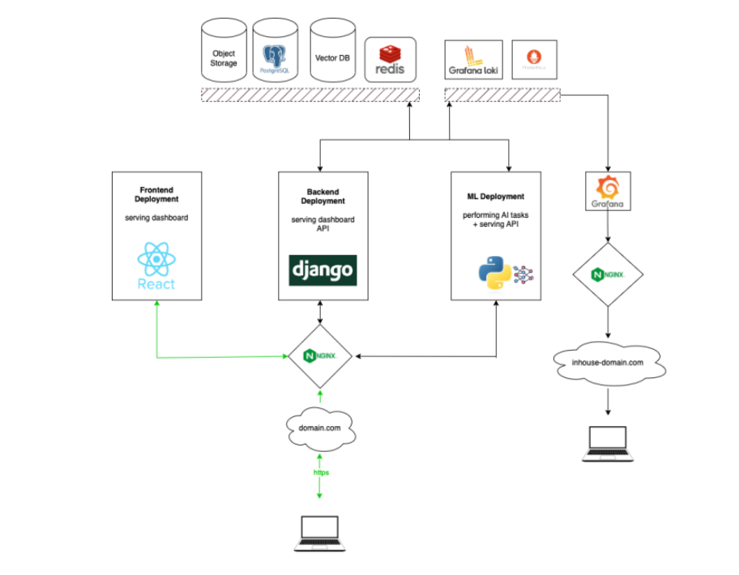
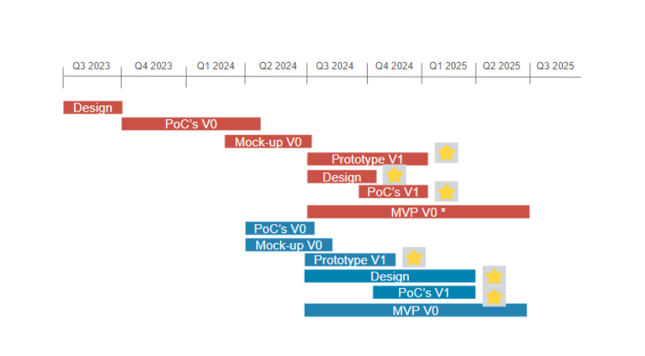

A. Key Technical Features
1.Integration of Diverse Data Sources – OPAL4HA integrates data such as call detail records (CDRs), earth observation (EO) data, surveys, interviews, official statistics, and user data to provide a holistic view of crises.
2.AI-Powered Query Interface – Generative AI powers an intuitive interface that transforms high-resolution data into timely indicators and insights.
3.Automatically-Generated Reports – The platform generates reports rapidly, allowing stakeholders to share progress and respond quickly.
4.Community Inputs – OPAL4HA incorporates on-the-ground insights to enhance information triangulation during crises.
5.Outreach Messaging – Targeted messages to the public help communities prepare for and manage shocks as crises evolve.
Intersectional Approach – A Gender Lens is incorporated to ensure inclusive decision-making and tailored response strategies for all community members.
B. Infrastructure Diagram
This diagram outlines the deployment and infrastructure setup needed to support the OPAL platform, focusing on scalability, reliability, and effective management of cloud resources...

C. Project Deployments
Frontend Deployment: The frontend of the platform will utilize a React-based project to power the dashboard interface. This frontend is designed to be modular, allowing the integration of various components and libraries for responsive visualization. The frontend will exist as its own repository and will communicate with backend services via REST APIs.
Backend Deployment: The backend will be managed using a Django framework, providing the necessary APIs for frontend communication and handling data-related processes. The backend will exist as a separate repository, designed for scalability and flexibility to accommodate evolving requirements.
- The backend supports REST APIs and is responsible for interacting with database systems, handling permissions, and managing data transactions.
- Packages to aid in development and management of backend services (e.g., ACL & Permissions, ORMs) will be integrated.
Machine Learning Deployment: The machine learning (ML) services will be deployed independently, allowing the platform to leverage artificial intelligence (AI) capabilities without disrupting the rest of the infrastructure.
- A lightweight web server such as Flask or FastAPI will power the ML services, which will interact directly with the backend.
- By keeping the AI components independent, we ensure stability and scalability, avoiding interruptions to other services during updates or downtimes.
- ML services will support functionalities like chatbot operations, vector-based data analysis, and integration with third-party AI services.
D. Resources Needed
Storage:
- Object storage is required to handle various assets, including media files and data relevant to the platform's operations. This will ensure easy accessibility and efficient data retrieval.
Database:
- A relational database will be utilized to store structured data. Separate schemas will be used for the dashboard and data aggregation.
- The dashboard will manage its own schema for operational data, while other schemas will support AI-generated data outputs, ensuring segregation of data responsibilities.
Caching & Performance Optimization:
- A caching layer will be integrated to store frequently accessed data, optimizing system performance and minimizing database load.
- This will improve data retrieval times, especially for services like the AI and dashboard, which will heavily rely on rapid access to pre-processed data.
Specialized Data Operations:
- A vector database will be incorporated to handle operations related to vector-based data, particularly in ML applications. This will allow for more complex operations, such as vector similarity searches and recommendations.
E. Monitoring and Performance
Monitoring Tools:
- The infrastructure will include a centralized logging and monitoring system to track errors, warnings, and system performance. Logs from all services will be routed to a centralized location for easy troubleshooting and performance optimization.
- Metrics related to backend deployments will be monitored, and alerts can be set for various thresholds to ensure timely responses to issues.
Visualization:
- Dashboards will be available to visualize system health and performance metrics, allowing for proactive system management and reporting.
OPAL4HA Roadmap
This OPAL Roadmap visual outlines the timeline for different phases of the OPAL platform's development from Q3 2023 through Q3 2025. It highlights the key milestones in the development of the platform, with overlapping phases for designing, prototyping, and releasing various versions.

The key milestones are as follow:
-
Design Phase (Q3 2023 - Q1 2024):
- Initial design efforts are focused on laying the groundwork for the platform.
-
PoC's V0 (Q4 2023 - Q1 2024):
- A Proof of Concept (PoC) is created, followed by its mock-up for initial validation.
-
Mock-up V0 (Q1 2024 - Q2 2024):
- The mock-up design is completed and transitions into the development of Prototype V1.
-
Prototype V1 (Q2 2024 - Q4 2024):
- The first prototype is developed and further refined.
-
MVP V0 (Q4 2024 - Q1 2025):
- A Minimal Viable Product (MVP) is launched, following extensive iterations from PoCs and prototypes.
-
Parallel Stream:
- A parallel development stream starts with a second PoC's V0 and Mock-up V0 (Q1 2024 - Q2 2024), which is later developed into Prototype V1 and MVP V0 during 2024-2025.
-
Completion and Refinement:
- After the MVP launch, additional iterations and refinements continue into Q3 2025, with a focus on stabilizing the platform.